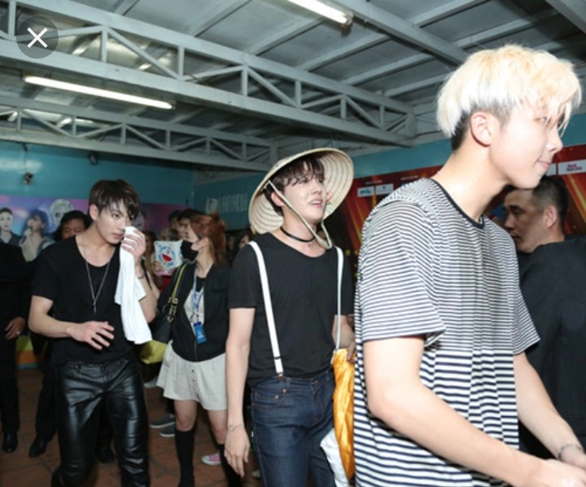

ARMY Việt Nam – Khám Phá Cộng Đồng Fandom văn minh nhất Việt Nam
Fandom ARMY không chỉ là nơi cộng đồng fan thể hiện tình yêu với BTS – nhóm nhạc K-pop nổi tiếng toàn cầu – mà còn là một cộng đồng kết nối hàng ngàn con người với những giá trị tích cực và tinh thần hỗ trợ lẫn nhau. Tại Việt Nam, ARMY không ngừng lan tỏa văn hóa bình luận văn minh, tổ chức các dự án từ thiện, và sáng tạo ra vô số tác phẩm nghệ thuật fanart, fanfiction hay video cover đầy cảm hứng.
Sức mạnh của fandom ARMY không chỉ nằm ở tình yêu âm nhạc, mà còn ở khả năng gắn kết và truyền cảm hứng cho mọi người xung quanh. Trong bài viết này, tôi sẽ cùng bạn khám phá những khía cạnh đặc sắc của cộng đồng ARMY Việt Nam – từ văn hóa, hoạt động, sáng tạo, đến ảnh hưởng xã hội của fandom này.
Tự hào là một thành viên của fandom ARMY, hôm nay mình sẽ chia sẻ tất tần tật về gia đình thứ hai của mình nhé!
1. Giới thiệu về fandom BTS tại Việt Nam
Fandom BTS tại Việt Nam, thường được biết đến với tên gọi ARMY, là một trong những cộng đồng người hâm mộ K-pop phát triển nhanh và năng động nhất. Từ những năm đầu BTS ra mắt, ARMY Việt Nam đã dần hình thành và mở rộng, với các fan từ nhiều độ tuổi, ngành nghề khác nhau nhưng đều có chung niềm yêu thích và sự đam mê với âm nhạc, phong cách và thông điệp mà BTS truyền tải.
Không chỉ là những người nghe nhạc, ARMY Việt Nam còn thể hiện tinh thần cộng đồng mạnh mẽ thông qua việc tham gia các hoạt động trực tuyến và offline, chia sẻ thông tin, phân tích MV, lyrics, và thậm chí dịch các bài báo, tin tức quốc tế về BTS để lan tỏa đến cộng đồng trong nước.
ARMY Việt Nam không chỉ đơn thuần là fan, mà còn là một lực lượng xã hội có tổ chức, có ảnh hưởng trong việc thúc đẩy âm nhạc Hàn Quốc tại Việt Nam. Các con số thống kê từ mạng xã hội cho thấy fandom này có hàng trăm nghìn thành viên hoạt động tích cực, tạo nên sức ảnh hưởng lớn trong các chiến dịch voting, streaming hay lan tỏa nội dung văn hóa Hàn Quốc. Đây là minh chứng rõ ràng cho sức mạnh của fandom không chỉ ở việc cổ vũ thần tượng, mà còn trong việc xây dựng một cộng đồng gắn kết, năng động và sáng tạo.
2. Văn hóa fandom tích cực
Tên “ARMY” được BTS lựa chọn từ khi nhóm ra mắt, với ý nghĩa là “Adorable Representative M.C. for Youth” – đại diện đáng yêu của giới trẻ. Đồng thời, “army” trong tiếng Anh còn có nghĩa là “quân đội”, tượng trưng cho sức mạnh, sự đoàn kết và tinh thần bảo vệ nhóm nhạc. Chính vì vậy, mỗi thành viên fan không chỉ là người hâm mộ đơn thuần mà còn là một “chiến binh” đồng hành, ủng hộ và bảo vệ BTS trên con đường âm nhạc.
Tại Việt Nam, ARMY đã nhanh chóng tiếp nhận tên gọi này và xây dựng cộng đồng riêng, kết hợp với các giá trị tích cực, sáng tạo và gắn kết. Việc hiểu nguồn gốc tên gọi giúp người hâm mộ mới dễ dàng cảm nhận tinh thần đoàn kết và mục tiêu chung của fandom, đồng thời nhận thức được trách nhiệm trong việc duy trì môi trường fan văn minh.
ARMY Việt Nam nổi bật với văn hóa fandom tích cực, khác biệt so với nhiều cộng đồng fan khác. Người hâm mộ không chỉ dừng lại ở việc ủng hộ BTS, mà còn cố gắng xây dựng môi trường lành mạnh, tôn trọng lẫn nhau và chống lại toxic fan. Trong các group, fanpage hay các cuộc trò chuyện trực tuyến, các thành viên thường nhắc nhở nhau về cách bình luận văn minh, tôn trọng quan điểm người khác và hạn chế drama, cãi vã.
Văn hóa tích cực này còn được thể hiện trong cách ARMY phản ứng với thông tin tiêu cực về thần tượng. Thay vì lan truyền tin đồn hay tranh cãi vô nghĩa, cộng đồng thường kiểm chứng thông tin, giải thích sự thật và lan tỏa các giá trị tích cực. Những hành động này không chỉ giữ cho fandom ổn định mà còn nâng cao hình ảnh của cộng đồng trong mắt công chúng. Bên cạnh đó, các fan còn tổ chức workshop, chia sẻ kinh nghiệm học tập, kỹ năng mềm hay sáng tạo, tạo ra một môi trường học hỏi lẫn nhau, đồng thời gắn kết các thành viên trẻ có cùng sở thích.
3. Hoạt động từ thiện và xã hội
Một trong những điểm đặc sắc của ARMY Việt Nam là tinh thần thiện nguyện và cộng đồng. Không chỉ dừng lại ở việc ủng hộ BTS, fandom còn thực hiện nhiều dự án xã hội, quyên góp cho những hoàn cảnh khó khăn, trẻ em vùng cao, người già neo đơn hay các chương trình bảo vệ môi trường. Những hoạt động này thường được khởi xướng từ ý tưởng tập thể và tổ chức bài bản, với minh bạch về tài chính và kết quả.
Trong đợt lũ lụt vừa qua tại miền Trung, cộng đồng ARMY Việt Nam đã nhanh chóng kêu gọi quyên góp để ủng hộ đồng bào gặp khó khăn. Chỉ trong thời gian ngắn, fandom đã gây quỹ gần 900 triệu đồng, sử dụng để mua lương thực, nước sạch, quần áo và các nhu yếu phẩm cần thiết. Hành động này không chỉ thể hiện tinh thần đoàn kết, sẻ chia của ARMY, mà còn khẳng định hình ảnh fandom tích cực và có trách nhiệm xã hội, luôn sẵn sàng chung tay giúp đỡ cộng đồng khi gặp thiên tai, bão lũ.
Sự kiện này đã gây một thiện cảm vô cùng lớn trong cộng đồng fandom nói riêng và toàn thể nhân dân Việt Nam nói chung, từ đó tạo ra một làn sóng các fandom quyên góp ủng hộ người dân miền Trung.
Các dự án từ thiện của ARMY Việt Nam không chỉ giúp đỡ cộng đồng mà còn lan tỏa văn hóa tích cực, khiến giới trẻ học hỏi cách tổ chức, làm việc nhóm và chịu trách nhiệm. Những hoạt động như tặng sách, trồng cây, gây quỹ hỗ trợ bệnh nhân, hay chiến dịch ủng hộ thiên tai đều thu hút đông đảo thành viên tham gia. Chính nhờ sự sáng tạo và tinh thần thiện nguyện này, ARMY không chỉ là fandom của âm nhạc, mà còn trở thành một cộng đồng xã hội có ảnh hưởng tích cực, được báo chí và truyền thông trong nước nhắc đến nhiều lần.
4. Hoạt động online – fanpage, group và hashtag
ARMY Việt Nam hoạt động mạnh mẽ trên mạng xã hội như Facebook, Instagram, Twitter, TikTok, và các diễn đàn fan K-pop. Các fanpage, group và hashtag đóng vai trò là trung tâm thông tin, kết nối và tổ chức hoạt động online. Nhờ các nền tảng này, ARMY có thể cập nhật nhanh nhất tin tức về BTS, chia sẻ MV mới, lyrics, phân tích sản phẩm âm nhạc, và hướng dẫn vote, streaming hỗ trợ thần tượng trong các bảng xếp hạng quốc tế.
Các hashtag nổi bật như #BTSARMY, #BangtanBoys hay #BTSinVietnam được sử dụng rộng rãi để lan tỏa thông tin và kết nối cộng đồng. Bên cạnh đó, ARMY Việt Nam còn tổ chức các event trực tuyến, quiz, challenge, livestream thảo luận về âm nhạc, thời trang, hay ý nghĩa các ca khúc của BTS. Hoạt động online này không chỉ giúp thành viên tương tác, học hỏi lẫn nhau, mà còn góp phần lan tỏa tinh thần fandom tích cực ra ngoài cộng đồng, tạo ấn tượng tốt với công chúng và truyền thông.
5. Fan project offline
Bên cạnh các hoạt động trực tuyến, ARMY Việt Nam còn tổ chức nhiều dự án offline ấn tượng. Các buổi meetup, event, flashmob, kỷ niệm sinh nhật thần tượng hay thậm chí các chiến dịch thiện nguyện offline đều được lên kế hoạch chi tiết và thực hiện bài bản. Đây là cơ hội để các thành viên gặp gỡ, giao lưu, chia sẻ sở thích và đam mê với BTS, đồng thời tăng cường tình đoàn kết trong cộng đồng.

Các dự án offline thường được thiết kế sáng tạo, từ trang trí địa điểm, chuẩn bị quà tặng, đạo cụ, đến các hoạt động team building, game, hay mini concert. Những sự kiện này không chỉ thỏa mãn đam mê âm nhạc và văn hóa K-pop, mà còn giúp ARMY rèn luyện kỹ năng tổ chức, quản lý thời gian, teamwork, và khả năng giao tiếp. Đây chính là điểm khác biệt của fandom tích cực, nơi niềm yêu thích âm nhạc trở thành động lực để phát triển kỹ năng và lan tỏa giá trị cộng đồng.
6. Sự sáng tạo trong fandom
Một điểm đặc sắc của ARMY Việt Nam là khả năng sáng tạo không giới hạn. Các fan không chỉ ủng hộ BTS bằng cách nghe nhạc hay mua album mà còn thể hiện tình yêu qua các sản phẩm nghệ thuật do chính tay mình tạo ra. Fanart, fanfiction, video cover, meme hay edit clip đều là những hình thức phổ biến. Những tác phẩm này không chỉ phục vụ cho cộng đồng nội bộ mà còn lan tỏa ra mạng xã hội, thu hút thêm nhiều người mới gia nhập fandom.
Sự sáng tạo trong fandom còn xuất hiện trong việc tổ chức các dự án online. Ví dụ, các ARMY Việt Nam thường làm video tổng hợp fanart, clip kỷ niệm sinh nhật thần tượng, tạo poster sự kiện hoặc phát động challenge trên TikTok và Instagram. Những sản phẩm này vừa thể hiện tình yêu dành cho BTS, vừa phát triển kỹ năng thiết kế, edit video, storytelling và marketing cho các fan.
Đặc biệt, nhiều fan trẻ tận dụng cơ hội này để học hỏi, thực hành và nâng cao khả năng sáng tạo, từ digital painting, animation, cho đến kỹ năng viết và dựng video chuyên nghiệp. Chính nhờ sự sáng tạo không ngừng, ARMY Việt Nam không chỉ là cộng đồng fan hâm mộ mà còn trở thành một “vườn ươm” tài năng trẻ, nơi đam mê âm nhạc kết hợp với nghệ thuật số và truyền thông.
7. Hỗ trợ thần tượng trong các hoạt động âm nhạc
ARMY Việt Nam nổi bật nhờ tinh thần ủng hộ thần tượng một cách bài bản và có tổ chức. Các fan tham gia tích cực vào việc vote, streaming nhạc, mua album, chia sẻ MV và bình luận tích cực trên các nền tảng quốc tế như Billboard, Spotify, YouTube, Melon hay V Live. Đây là cách ARMY giúp BTS duy trì vị thế trên các bảng xếp hạng toàn cầu, đồng thời tạo sức lan tỏa mạnh mẽ tới cộng đồng quốc tế.
Ngoài việc vote và streaming, ARMY còn tổ chức chiến dịch trend hashtag, quảng bá album mới, MV và concert. Các dự án này thường được chuẩn bị kỹ lưỡng, từ hướng dẫn cách vote, theo dõi lượt xem, đến lập timeline để đạt hiệu quả tối đa. Sự chuyên nghiệp và đồng bộ của ARMY Việt Nam giúp cộng đồng được đánh giá cao trong các fandom quốc tế, đồng thời củng cố mối liên kết chặt chẽ giữa thần tượng và fan.
Hơn nữa, việc tham gia các chiến dịch này còn giúp fan trẻ rèn luyện kỹ năng tổ chức, lập kế hoạch, teamwork và truyền thông số, biến niềm yêu thích âm nhạc thành trải nghiệm học tập hữu ích và đáng giá.
8. Cộng đồng và tinh thần hỗ trợ lẫn nhau
Một yếu tố quan trọng làm nên sức mạnh của ARMY Việt Nam là tinh thần hỗ trợ lẫn nhau. Không chỉ kết nối vì âm nhạc, fandom còn là nơi các thành viên giúp nhau trong học tập, tâm lý, sở thích cá nhân, và thậm chí là cơ hội nghề nghiệp.
Trong cộng đồng, các fan trẻ chia sẻ kinh nghiệm học tập, kỹ năng mềm, phương pháp sáng tạo fanart hay viết fanfiction. Những fan lớn tuổi hơn có thể hướng dẫn, mentor hoặc chia sẻ chiến lược quản lý dự án, giúp newbie hòa nhập nhanh và phát triển kỹ năng. Ngoài ra, ARMY Việt Nam còn tạo ra mạng lưới hỗ trợ tâm lý, nơi fan chia sẻ cảm xúc, tìm lời khuyên khi gặp áp lực, stress hoặc khó khăn trong cuộc sống.
Tinh thần này không chỉ làm fandom trở nên gần gũi, thân thiện mà còn giúp cộng đồng phát triển bền vững, duy trì văn hóa tích cực và đoàn kết. Đó cũng là lý do ARMY Việt Nam được đánh giá là một trong những fandom có văn hóa tốt nhất tại châu Á.
9. Thách thức và cách fandom duy trì tích cực
Dù phát triển mạnh mẽ, ARMY Việt Nam cũng gặp những thách thức riêng. Một số vấn đề phổ biến là toxic fan, drama nội bộ, tranh cãi về thần tượng hoặc xung đột giữa các fandom khác. Nếu không được quản lý tốt, những yếu tố này có thể làm giảm hình ảnh tích cực của cộng đồng.
Để duy trì môi trường văn minh, ARMY Việt Nam đã thiết lập quy tắc ứng xử, kiểm soát comment và hướng dẫn thành viên hành xử có trách nhiệm. Các admin fanpage và group thường xuyên nhắc nhở, giải thích, và xử lý những tình huống xung đột một cách công bằng. Fan cũng học cách tách biệt ý kiến cá nhân và thông tin chính thống, không lan truyền tin đồn hoặc gây ảnh hưởng tiêu cực đến thần tượng.
Nhờ những biện pháp này, cộng đồng không chỉ duy trì văn hóa tích cực mà còn trở thành hình mẫu fandom văn minh, tạo ảnh hưởng tốt với giới trẻ và truyền thông trong nước.
10. Ảnh hưởng văn hóa và xã hội của fandom
ARMY Việt Nam không chỉ là một cộng đồng fan nhạc K-pop, mà còn là một lực lượng văn hóa xã hội đáng kể. Sự tích cực, sáng tạo và tinh thần đoàn kết của fandom đã ảnh hưởng đến cách thế hệ trẻ tiếp cận âm nhạc, nghệ thuật và mạng xã hội. Fandom lan tỏa giá trị như tình yêu thương, hỗ trợ lẫn nhau, tinh thần thiện nguyện, và khả năng tổ chức các dự án tập thể.
Ảnh hưởng của ARMY còn mở rộng ra các lĩnh vực khác: truyền thông, marketing, sự kiện, và thậm chí giáo dục. Các dự án từ thiện, workshop sáng tạo hay sự kiện offline đều giúp giới trẻ học hỏi kỹ năng mềm, teamwork và quản lý dự án. Không chỉ gắn kết nội bộ, fandom còn tạo hình ảnh tích cực cho cộng đồng K-pop Việt Nam, làm gương cho các fandom khác về văn hóa, tinh thần tích cực và sáng tạo.